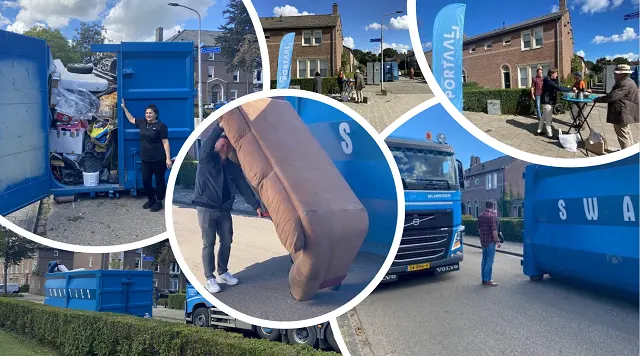
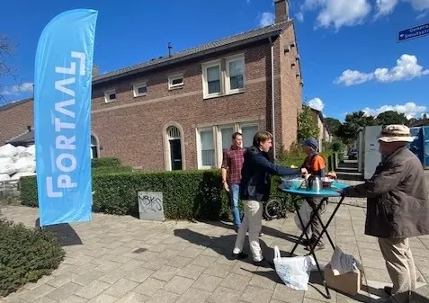

Nieuws ·
<strong><em>Grootscheepse renovatie 285 woningen Heseveld gaat finale fase in</em></strong>

Dit bericht uit ons archief verscheen op 23 september 2022 op NieuwsNijmegen.nl. Data, tijden en prijzen kunnen inmiddels anders zijn.
“Ondanks alle aangekondigde maatregelen van het kabinet, maken wij ons nog steeds ernstig zorgen of onze huurders wel kunnen rondkomen deze winter,” zo liet bestuursvoorzitter Sander Heinsman van Portaal weten in een reactie op de Miljoenennota 2023. Daarom doet Portaal er op dit moment bijvoorbeeld alles aan om het renoveren en verduurzamen van haar woningen te versnellen. Daarnaast zoekt Portaal haar huurders op met advies over wat zij zelf kunnen doen om energie te besparen en brengen vakmannen van Portaal radiatorfolie, brievenbusborstels en/of tocht-strips aan in woningen.
Ook in Nijmegen zijn Portaal en aannemer De Variabele in volle gang met het verbeteren van en onderhoud aan woningen. “Ondanks problemen met leveringen van materialen en voldoende vakmensen, zijn wij zeer tevreden dat komende week de laatste fase van de grootscheepse renovatie en verduurzaming in Heseveld van start gaat. Momenteel worden de keukens, douches en toiletten vernieuwd uit fase 3,” aldus projectmanager Jelle Kamphuis.
Portaal en De Variabele zijn in Heseveld sinds de zomer van 2021 bezig met een grootschalige woningverbetering en isolatie van 285 eengezinswoningen. De renovatie van zoveel woningen is een forse opgave. Dat lukt niet in één jaar. Het renovatieproject is daarom opgeknipt in vier fases.
Comfortabele en energiezuinige woning
De bewoners van de Generaal Smutsstraat, De la Reystraat, Daniëlsweg en Kaaplandstraat (fase 4) gingen voor de zomer akkoord met het renovatievoorstel. Jelle Kamphuis: “Voor we met het binnenwerk starten, ontvangt elke bewoner een dagplanning waarop staat wanneer de werkzaamheden in huis plaatsvinden vanaf komende week.”

Op 5 september is al gestart met het isoleren van de muren en vloeren en de werkzaamheden aan het dak (brandveiligheid). Dit gebeurt van buitenaf. “De zolderisolatie voeren we uit kort na het maken van de vlizotrap. Daar plaatsen we ook het vraag-gestuurde ventilatiesysteem. Waar nodig wordt oude beglazing vervangen voor HR++ glas,“ vertelt Jelle Kamphuis over de isolerende maatregelen. Volgens de planning worden de werkzaamheden in de laatste woningen eind februari 2023 afgerond.
Opruim dag zorgt voor verbinding
Voordat de bouwvakkers volgende week beginnen in de woningen, konden bewoners deze week hun overtollige huisraad opruimen en weggooien. Zo kunnen ze na de werkzaamheden een opgeruimde en frisse start maken. Jelle Kamphuis: ”Zo’n opruim dag levert écht een win-win-win op. Bewoners ruimen op en maken daardoor gelijk plaats voor de uitvoering van de werkzaamheden binnen. Daarnaast is een dag als deze een belangrijk contactmoment met de bewoners voor het project- en wijkteam. Zeker in een roerige tijd waarin we nu zitten.”
De woningen in Heseveld zijn uitgevoerd in de Bossche Stijl en zijn daarom beschermd stadsgezicht. Ze stammen uit de jaren vijftig van de vorige eeuw en waren toe aan onderhoud en verbetering. Bewoners deelden hun ervaringen met kou, tocht en vocht in de woning. Goede isolatie en ventilatie zijn belangrijk om prettig te wonen. Dat is straks weer helemaal in orde en de bewoners hebben dan een comfortabele en energiezuinige woning met een verbeterd energielabel. Dat is hard nodig met de huidige hoge energieprijzen.